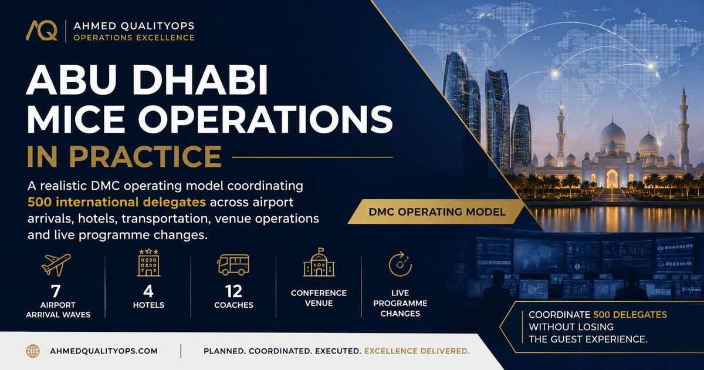

Estimated article reading time
Managing MICE Hospitality Desks, Delegate Readiness and Controlled Departures in Abu Dhabi

The airport team has completed the first arrival waves.
The delegates have reached their Abu Dhabi hotels.
Their luggage is being unloaded, room keys are being prepared, and the hospitality desks are ready to welcome them.
It may appear that the most difficult part of the operation is over.
In reality, the hotel is where several important parts of the MICE programme come together:
- Accommodation
- Guest information
- Luggage
- Conference registration
- Daily transport
- Programme changes
- VIP movements
- Speaker requirements
- Optional tours
- Lost property
- Complaints
- Departure control
A hotel lobby can quickly become an operational pressure point.
Five hundred delegates staying across four hotels may create hundreds of small questions:
- Is my room ready?
- Where is the hospitality desk?
- What time is tomorrow’s coach?
- Which coach should I take?
- Can I travel with my colleague from another hotel?
- Where should I leave my luggage?
- Has the dinner time changed?
- What happens if I miss the coach?
- Can I return early?
- Who can help with my lost bag?
- Which entrance are we using at the venue?
The guest should not need to understand the full operational system.
They should receive one clear answer and know what to do next.
That is the purpose of the hotel hospitality desk and the controlled departure process.
A successful hotel operation turns hundreds of individual questions into one calm, organised and consistent guest journey.
The operating scenario
This article continues the fictional Abu Dhabi conference used throughout the series:
- 500 international delegates
- Four participating hotels
- Hotels located across Yas Island, the Corniche and central Abu Dhabi
- One main conference venue
- Twelve coaches
- Two standby vehicles
- Morning and evening movements
- Speakers and VIP guests
- Several languages
- Delegates requiring mobility support
- A welcome dinner
- An evening cultural programme
- Optional post-conference activities
The hotels have different layouts.
One has a large ballroom lobby and several coach bays.
Another has a narrow main entrance.
One hotel can hold several coaches away from the lobby.
Another requires vehicles to approach one at a time.
The movement plan must therefore reflect the actual operating conditions of each property.
A departure procedure that works at one hotel may not work at another.
1. Complete the airport-to-hotel handover
The hotel team should know what is arriving before the coach reaches the entrance.
A hotel desk cannot prepare properly when the only message it receives is:
The airport coach is coming.
The receiving team needs to know:
- Movement code
- Airport departure time
- Expected hotel arrival time
- Number of delegates onboard
- Number expected but not onboard
- VIPs and speakers
- Accessibility requirements
- Separate luggage arrangements
- Baggage-delay cases
- Unexpected passengers
- Guests travelling in recovery vehicles
- Room-readiness concerns
- Next programme commitment
Practical scenario
Arrival Wave A03 leaves Zayed International Airport with 47 delegates.
Two additional delegates remain at the airport because of delayed baggage.
One of their bags has already been loaded onto the main coach.
The hotel desk expects 49 guests.
The airport team sends only this message:
Coach departed. Forty-seven guests onboard.
When the coach arrives, the hotel team believes two delegates are missing.
The hotel desk begins calling rooms and contacting the client.
The delegates are not missing.
They are travelling later on a recovery vehicle.
Primary response
The airport-to-hotel handover should state:
Movement A03 departed Zayed International Airport at 13:40 with 47 delegates for Hotel Two. Two delegates remain with Airport Representative R6 while completing baggage reports. They will travel on Recovery Vehicle M1, with estimated hotel arrival at 14:35. One bag belonging to Guest X is on the main coach and should be held securely by the hotel desk.
The hotel team should acknowledge the message.
Backup plan
Use three movement confirmations:
Departed
Sent by the airport team when the vehicle leaves.
Approaching
Sent when the vehicle is close to the hotel.
Received
Sent by the hotel desk after the delegates and luggage have arrived.
The final hotel message may read:
Movement A03 received at Hotel Two at 14:12. Forty-seven delegates arrived. One separately travelling guest bag is secured at the hospitality desk. Hotel team is ready to receive Recovery Vehicle M1.
The movement should remain open on the control board until the receiving hotel confirms it.
Operational lesson
A coach departure is not the end of the airport movement.
The movement is complete only when the hotel has received the guests and accepted responsibility for any open cases.
Related reading
For the full airport process behind this handover, read:
2. Treat the hospitality desk as a local control point
A MICE hospitality desk is often presented as a branded information counter.
It should be much more than that.
The desk is the connection point between:
- Delegates
- Hotel operations
- The transport team
- The conference organiser
- The movement control room
- Guides and onboard hosts
- Activity suppliers
- The event venue
The hospitality desk should be able to answer routine questions without calling the control room every few minutes.
It should also recognise when a question is no longer routine and needs escalation.
Core hospitality-desk responsibilities
The desk may be responsible for:
- Welcoming arriving delegates
- Explaining the programme
- Displaying departure information
- Confirming coach allocations
- Supporting missing-delegate checks
- Recording programme changes
- Coordinating luggage questions
- Supporting room-readiness communication
- Assisting with accessibility needs
- Escalating transport delays
- Managing optional-tour information
- Recording lost property
- Supporting guest complaints
- Handing over unresolved issues between shifts
What every desk should receive
Each hospitality desk should have a controlled operating pack containing:
- Latest approved programme
- Hotel-specific movement schedule
- Delegate list
- Coach allocations
- Staff contact list
- Control-room contact
- Venue information
- Airport recovery list
- VIP and speaker notes
- Accessibility notes
- Guest communication templates
- Lost-property procedure
- Incident escalation process
- Local hotel contacts
- Version number
- Issue date and time
Practical scenario
A delegate asks the hotel representative:
Which entrance will our coach use tomorrow morning?
The representative does not know.
They call the central control room.
Five minutes later, another delegate asks the same question.
The representative calls again.
By the end of the evening, the control room has received more than 30 routine hotel questions.
The control room becomes busy answering information that should already be available locally.
Primary response
The hotel desk should receive a hotel movement sheet showing:
- Guest meeting point
- Lobby holding area
- Coach loading entrance
- Movement colours and numbers
- First call time
- Boarding time
- Departure time
- Latest safe release
- Recovery vehicle process
- Venue destination
- Return arrangement
Backup plan
When the answer is not available, the desk should:
- Record the question.
- Ask the designated hotel movement lead.
- Obtain one confirmed answer.
- Update the hotel operating pack.
- Brief the entire desk team.
- Add the answer to the delegate information board when useful.
The same question should not require a new investigation every time.
Operational lesson
A strong hospitality desk reduces pressure on the control room.
A weak hospitality desk transfers every small question into the central operation.
3. Plan the desk position around the guest journey
A beautifully branded desk is not useful when delegates cannot find it.
The desk should be positioned where it supports the guest’s natural movement through the hotel.
Possible locations include:
- Near the main entrance
- Close to group check-in
- Near the conference registration area
- Beside the main lift lobby
- Near the ballroom entrance
- Close to the coach departure point
The correct position depends on:
- Hotel layout
- Guest room locations
- Group check-in area
- Coach loading access
- Lobby congestion
- Hotel security requirements
- Other groups using the hotel
- Accessibility
Practical scenario
The hospitality desk is placed beside the ballroom because the space looks professional.
Most delegates enter through the opposite side of the hotel.
They collect their room keys and go directly to the lifts without seeing the desk.
The following morning, many delegates do not know:
- Their coach colour
- The departure time
- The loading location
- That the programme changed overnight
Primary response
The hotel team should review the delegate path:
- Where do arriving guests enter?
- Where do they receive room keys?
- Where do they reach the lifts?
- Where will they naturally pass again?
- Where is the morning holding point?
- Is the location visible to a guest entering for the first time?
If the main desk cannot be moved, add:
- Directional signs
- A smaller welcome position
- Lift-lobby information
- Room-delivery information
- A digital message
- Staff during peak arrival periods
Backup plan
Use three levels of visibility:
Main hospitality desk
The main place for personal assistance.
Directional signage
Placed at guest decision points.
Digital communication
Used for reminders and approved programme updates.
No single communication channel should carry the full responsibility.
Suggested sign
Conference Hospitality Desk
Programme Information · Transport · Guest Assistance
Open: 07:00–20:00
Location: Main Lobby, beside the ballroom entrance
Operational lesson
Place information where the guest needs to make a decision—not only where the branding looks attractive.
4. Prepare for early arrivals and rooms that are not ready
International MICE groups often arrive before normal hotel check-in time.
This should not be treated as a surprise on the day.
The sales team, hotel and DMC should agree in advance how early arrivals will be managed.
Possible arrangements include:
- Guaranteed early check-in
- Priority rooms
- Hospitality room
- Luggage storage
- Breakfast
- Refreshments
- Wash-and-change facilities
- Temporary working area
- Short orientation
- Optional activity
- Staggered key distribution
Practical scenario
Seventy delegates reach a hotel at 09:00 after overnight flights.
Only 20 rooms are ready.
The lobby has limited seating.
The main conference briefing is not until 16:00.
The front desk tells the group:
Check-in is at 15:00.
The statement may be technically correct.
It does not solve the guest-experience problem.
Primary response
The hotel desk should activate the early-arrival plan:
- Welcome the delegates.
- Explain the situation honestly.
- Secure and label luggage.
- Direct guests to the hospitality area.
- Prioritise rooms using agreed criteria.
- Provide refreshments where included.
- Set a time for the next room update.
- Avoid promising that all rooms will be ready at one exact time unless confirmed.
Priority-room criteria
Priority may be given to:
- Guests with mobility requirements
- Older delegates
- Speakers with early commitments
- Guests with medical needs
- Families where relevant
- VIP guests
- Delegates requiring a room to prepare for an event function
Priority should be based on operational and guest needs—not on who complains most loudly.
Suggested guest message
Welcome to Abu Dhabi. Some rooms are still being prepared following the previous night’s occupancy. Your luggage will be stored securely, and refreshments are available in the hospitality room. The first room update will be provided at 10:00. Guests with priority requirements are being assisted separately.
Backup plan A: Hospitality room
The room may provide:
- Seating
- Wi-Fi
- Charging points
- Refreshments
- Restrooms nearby
- Programme information
- Work tables
- A quiet zone
Backup plan B: Staggered key release
The hotel desk can release rooms in controlled groups instead of creating one large queue.
Backup plan C: Short optional activity
This should be used only when:
- It has been planned in advance.
- Guests can participate comfortably after travelling.
- Luggage is secure.
- The timing is realistic.
- Participation is optional.
- Transport and insurance requirements are covered.
An exhausted delegate should not be forced onto a city tour simply because the room is not ready.
Sales and commercial lesson
The quotation should define:
- Guaranteed early check-in costs
- Hospitality-room charges
- Breakfast or refreshment arrangements
- Luggage-room support
- Additional hotel staff
- Porterage
- Optional activity costs
- Responsibility for unexpected early arrival
Related reading
For the commercial structure behind additional services, read:
5. Control programme versions and last-minute changes
A MICE programme changes frequently.
Flights move.
Dinner times change.
A ballroom changes.
A speaker requests a different transfer.
The venue adjusts an entrance.
The client adds an activity.
The problem is not that programmes change.
The problem is when different teams use different versions.
Practical scenario
The client moves the evening dinner departure from 18:30 to 18:00.
At Hotel One:
- The hospitality desk displays 18:00.
- The lobby screen displays 18:30.
- A WhatsApp message says 18:15.
- The guide was briefed for 18:30.
- The restaurant expects the group at the original time.
The operation now has several versions of the truth.
Primary response
No programme change should become live until it has:
- A named approver
- A version number
- An issue date and time
- A list of affected movements
- An approved guest message
- Transport confirmation
- Hotel confirmation
- Venue or supplier confirmation
- Staff acknowledgement
- Removal of the old information
Change notice example
Programme Update 04
Issued: 15:20
Approved by: Event Director
Change: Dinner departure moved from 18:30 to 18:00
Affected hotels: All
Coach call time: 17:40
Boarding time: 17:50
Guest message: Approved
Hotel acknowledgements required by: 15:30
Transport acknowledgement required by: 15:25
Backup plan
When a change is issued:
- Remove old printed signs.
- Update lobby screens.
- Update desk copies.
- Brief guides and dispatchers.
- Confirm vehicle timing.
- Notify delegates.
- Ask hotels to acknowledge completion.
- Keep an archive of the previous version for operational records.
Do not leave the old sign beside the new sign.
Do not expect guests to decide which one is correct.
Practical scenario: client changes the plan during loading
The first coach is already boarding when the client asks to delay all departures by 20 minutes because a senior executive is still in a meeting.
Primary response
The movement lead should confirm:
- Does the change apply to every coach?
- Will it affect the venue slot?
- Are delegates already seated?
- Will drivers exceed waiting or duty limits?
- Is the venue informed?
- Who approved the change?
- What should guests be told?
- Does the delay create an additional cost?
Backup options
Hold the executive’s movement only
Use a dedicated or recovery vehicle for the late executive.
Hold selected coaches
Use only when the venue can absorb the revised sequence.
Continue the original programme
Use when delaying 500 people would create greater disruption than moving one late guest separately.
Suggested client response
We can hold the full group, but this will affect the venue arrival sequence and may create additional coach waiting time. The lower-impact option is to release the scheduled movements and transfer the executive separately. Please confirm your preferred option by 17:45.
A friendly tone does not mean avoiding the operational consequences.
6. Prepare delegates before departure morning
Morning coach loading should not begin with delegates discovering their movement for the first time.
The hotel desk should prepare the group the evening before.
Delegates should receive:
- Meeting location
- First call time
- Boarding time
- Departure time
- Movement colour and number
- Venue name
- Dress guidance where relevant
- Identification or badge requirements
- Items to bring
- Items not to bring
- Accessibility contact
- Late-arrival procedure
- Return information where confirmed
Practical scenario
The conference begins at 09:00.
Coach departure is 08:00.
At 07:55, delegates arrive in the lobby asking:
- Which coach is mine?
- Do I need my passport?
- Can I bring my suitcase?
- Is breakfast included?
- Can my colleague from another hotel travel with me?
- Where is the venue?
- What time will we return?
The loading team spends the departure window answering questions that should have been resolved the previous evening.
Primary response
The hospitality desk should conduct a departure-readiness check before closing:
- Signs displayed
- Guest messages sent
- Movement lists confirmed
- Coaches confirmed
- Staff reporting times confirmed
- Special requirements reviewed
- VIP movements confirmed
- Hotel breakfast timing checked
- Luggage movements identified
- Venue entrance reconfirmed
- Backup vehicle status checked
Suggested guest message
Tomorrow’s Conference Transfer
Movement: BLUE 03
Meeting point: Main lobby conference desk
Please arrive: 07:40
Boarding begins: 07:50
Coach departs: 08:00
Please bring: Conference badge and personal essentials
For assistance: Visit the hospitality desk or contact the event team
Backup plan
Use more than one reminder:
- Hospitality-desk explanation
- Lobby sign
- Digital message
- Room-delivered card where appropriate
- On-screen hotel information
- Group-leader reminder
The information should be consistent across every channel.
7. Use a first-call, boarding and release sequence
When 100 delegates are told to meet at the coach at the departure time, the result is usually congestion.
A controlled departure uses several stages.
Stage 1: First call
Delegates begin moving toward the meeting point.
Stage 2: Holding
Guests are organised by movement.
Stage 3: Boarding call
Only the movement with a ready coach approaches the loading point.
Stage 4: Boarding count
Guests are physically counted onto the vehicle.
Stage 5: Release
The dispatcher approves the departure.
Practical scenario
Three coaches are planned to leave the hotel at 08:00.
All delegates are told:
Meet outside at 08:00.
At 08:00:
- More than 120 delegates crowd the entrance.
- Drivers cannot identify their groups.
- Luggage blocks the path.
- Hotel guests from another group cannot enter.
- Delegates board the first coach they see.
- The dispatcher cannot complete accurate counts.
Primary response
A better sequence could be:
| Time | Action |
|---|---|
| 07:35 | Hospitality desk opens departure support |
| 07:40 | First call for BLUE 01 |
| 07:45 | BLUE 01 moves to holding area |
| 07:50 | BLUE 01 boards |
| 07:55 | First call for BLUE 02 |
| 08:00 | BLUE 01 released |
| 08:05 | BLUE 02 boards |
| 08:10 | BLUE 02 released |
| 08:15 | BLUE 03 boards |
The actual intervals depend on hotel access, coach capacity and venue arrival slots.
Backup plan
When the loading area becomes congested:
- Stop calling additional movements.
- Keep uncalled guests inside the holding area.
- Clear one coach at a time.
- Reposition signs.
- Use staff to protect the walking route.
- Inform the venue if the release sequence changes.
- Update later movements.
Operational lesson
The goal is not to place every coach at the hotel entrance simultaneously.
The goal is to release each movement safely and predictably.
8. Count expected, presented, boarded and missing guests
A delegate can appear in several different operational counts.
Expected
The guest is listed for the movement.
Presented
The guest has reached the hotel meeting point.
Boarded
The guest is physically onboard.
Missing
The guest is expected but has not been accounted for.
These numbers should not be treated as interchangeable.
Practical scenario
The hospitality desk checks 48 names.
The coach loader counts 46 people onboard.
The desk says:
Everyone checked in, so everyone is on the coach.
Two delegates checked in at the desk but returned to their rooms.
The coach leaves without them.
Primary response
The final departure count must reflect the people physically onboard.
Before release, record:
- Expected: 48
- Presented: 48
- Boarded: 46
- Missing from vehicle: 2
The hotel desk then identifies the two guests and applies the missing-delegate process.
Backup plan
Use two controls:
Named check
Confirms which guests are expected and present.
Physical onboard count
Confirms how many people are actually on the vehicle.
Digital scanning can improve visibility.
It should not replace the final safety count.
Practical scenario: the count is higher than expected
The movement expects 44 guests.
The physical count is 46.
Possible reasons include:
- Two guests boarded the wrong coach.
- Client employees joined without being listed.
- A colleague from another hotel changed movements.
- The count was incorrect.
- An unregistered guest boarded.
Response
Do not release until the difference is understood.
The loader should:
- Repeat the physical count.
- Ask delegates to confirm the movement.
- Check names or badges.
- Identify unexpected passengers.
- Confirm vehicle capacity.
- Update the control room.
- Obtain approval for any movement change.
A higher count is not automatically good news.
It may indicate that another coach is now missing guests.
9. Manage missing delegates without delaying everyone indefinitely
Late or missing delegates are one of the most common hotel departure problems.
The operation should not wait until departure time to decide what to do.
Every movement should show:
- Scheduled release
- Latest safe release
- Missing-guest contact owner
- Hotel room-contact procedure
- Recovery vehicle
- Venue notification owner
- Release authority
Practical scenario
BLUE 03 expects 46 delegates.
At 08:15:
- 42 guests are onboard.
- Two answer their phones and say they are coming.
- Two cannot be contacted.
- Latest safe departure is 08:22.
- Standby Vehicle S1 is available.
Primary response
The team should:
- Confirm the onboard count.
- Call the missing delegates.
- Use the approved hotel contact procedure.
- Check whether they moved to another coach.
- Inform the control room.
- Prepare Standby S1.
- Release BLUE 03 at 08:22 after approval.
- Inform venue registration.
- Continue assisting the four guests.
Suggested message onboard
We are completing the final passenger check. The coach will depart shortly, and our hotel team will continue assisting any late delegates.
Suggested message to a late delegate
Your main coach has departed to protect the conference schedule. Please come directly to the hospitality desk. We are arranging the next available transfer and will confirm the departure time with you.
Backup plan
Late guests may use:
- A sweep coach
- A standby minicoach
- A later compatible movement
- An approved car transfer
- A taxi only when authorised and suitable
The recovery method should be selected according to:
- Guest number
- Venue timing
- Safety
- Accessibility
- Vehicle availability
- Cost approval
What not to do
Do not publicly shame late delegates.
Do not say:
Everyone is waiting because of you.
The operation should remain respectful while still protecting the schedule.
10. Prevent delegates from boarding the wrong coach
Wrong-coach boarding is common when:
- Several vehicles depart together.
- Signs use similar colours.
- Delegates follow friends.
- Movement names change.
- Staff use fleet numbers instead of guest-facing codes.
- Hotel and venue names sound similar.
- Delegates do not speak the operating language confidently.
Practical scenario
BLUE 03 and BLUE 05 are loading from nearby doors.
Both signs are blue.
Several BLUE 03 delegates board BLUE 05 because colleagues are already inside.
Their luggage is loaded underneath the wrong vehicle.
Primary response
Stop the boarding process.
The team should:
- Hold both vehicles.
- Reconfirm the movement identities.
- Check every boarded guest.
- Remove incorrectly loaded luggage.
- Reconcile both passenger lists.
- Repeat physical counts.
- Update the control room.
- Release only after the difference is resolved.
Backup plan
Do not use colour alone.
Each movement sign should include:
- Colour
- Number
- Hotel
- Destination
- Departure time
- Optional icon
Example:
BLUE 03
Yas Island Hotel → Conference Venue
Departure: 08:15
The loader should ask:
Are you travelling on BLUE 03 to the conference venue?
This is more reliable than asking:
Are you with the conference?
Preventive action
The same movement identity should appear on:
- Delegate message
- Hotel sign
- Staff list
- Coach card
- Driver brief
- Venue arrival list
Consistency prevents confusion.
11. Control luggage separately from passenger movement
Not every hotel-to-venue movement includes luggage.
When luggage is involved, it should have its own operating plan.
Examples include:
- Final departure day
- Hotel changes
- Early check-out
- Exhibition materials
- Speaker equipment
- Group gifts
- Delegate samples
- Optional extensions
Practical scenario
One hundred delegates check out before the conference.
Their luggage will travel separately to another hotel.
Bags are placed together in the lobby without clear hotel labels.
The luggage vehicle arrives, but the loader cannot confirm:
- The expected bag count
- Which bags belong to which hotel
- Whether all bags have been collected
- Which bags contain essential items
- Who will receive them
Primary response
Pause loading until the luggage movement is controlled.
The team should:
- Separate luggage by destination.
- Count bags.
- Label movement groups.
- Record oversized items.
- Identify high-priority items.
- Assign a luggage-vehicle owner.
- Confirm the receiving hotel.
- Create a signed or digital handover.
Backup plan
A luggage-control sheet can include:
| Field | Information |
|---|---|
| Movement code | Luggage movement identity |
| Origin | Sending hotel |
| Destination | Receiving hotel or venue |
| Expected bags | Planned number |
| Loaded bags | Actual number |
| Oversized items | Equipment and special luggage |
| Vehicle | Assigned luggage vehicle |
| Loader | Person responsible |
| Receiving person | Named destination contact |
| Departure time | Actual release |
| Arrival confirmation | Final handover |
Practical scenario: delegate wants luggage from the truck
A delegate places medication inside a suitcase loaded onto the luggage vehicle.
After loading, the delegate asks for the bag back.
Primary response
The luggage team should avoid unloading the entire vehicle in an unsafe area.
The team should:
- Identify the bag using the tag.
- Confirm whether it can be accessed safely.
- Escalate medication concerns immediately.
- Avoid separating the vehicle from supervision.
- Record any loading change.
- Reconfirm the final bag count.
Preventive message
Before collection, tell delegates:
Please keep medication, passports, valuables, chargers and anything needed during the day with you. Checked luggage may not be accessible until it reaches the receiving hotel.
12. Prepare separate plans for speakers, VIPs and executives
Senior guests and speakers may need different movement arrangements because of:
- Private meetings
- Security
- Media commitments
- Preparation time
- Presentation materials
- Late programme changes
- Personal preferences
- Client protocol
The service level should be agreed before the event.
Practical scenario
A keynote speaker is assigned to the main coach.
Ten minutes before departure, the client says:
The speaker needs to remain for an interview and leave 30 minutes later.
The main coach contains 48 delegates and should not be held.
Primary response
Release the main coach as planned.
Arrange a separate recovery movement for the speaker.
Confirm:
- Interview finishing time
- Vehicle availability
- Venue access
- Speaker entrance
- Presentation equipment
- Client approval
- Hotel representative
- Venue receiving person
Suggested client message
We will release the main delegate movement as scheduled and arrange a separate vehicle for the speaker after the interview. Please confirm the expected interview finish time so that the vehicle and venue reception can be aligned.
Backup plan
Critical guests should have:
- Named hotel contact
- Named venue contact
- Direct mobile contact
- Backup vehicle option
- Programme deadline
- Presentation backup
- Separate luggage plan
- Escalation authority
Practical scenario: VIP requests an unplanned private vehicle
A VIP guest does not want to use the group coach.
No private vehicle is included in the confirmed programme.
Response
The hotel desk should not promise:
We will arrange it immediately.
A better response is:
I will check the fastest available private-transfer option and confirm the timing and approval with the event team.
The desk then confirms:
- Vehicle availability
- Estimated arrival
- Additional cost
- Client approval
- Venue access
- Whether the group movement is affected
Commercial lesson
VIP flexibility should be included in the original quotation where it is likely to be requested.
13. Connect accessibility to the full hotel movement
Accessibility is not complete because the guest reached the hotel successfully.
The full route should be reviewed:
- Guest room
- Lift
- Hospitality desk
- Lobby
- Holding area
- Coach loading point
- Vehicle
- Venue entrance
- Registration
- Return movement
Practical scenario
A wheelchair user is assigned to an accessible vehicle.
The vehicle can receive the guest safely.
However, the hotel loading point is reached through a narrow route containing stairs.
The accessible vehicle is correct.
The path to the vehicle is not.
Primary response
The hotel movement lead should:
- Confirm an accessible path.
- Coordinate with hotel security or operations.
- Keep the guest and companion informed.
- Position the vehicle at the suitable entrance.
- Assign a trained staff member.
- Avoid separating the guest from the main movement without explanation.
- Inform the venue of the revised arrival.
Backup plan
For every accessibility movement, confirm:
- Guest preference
- Companion
- Mobility device
- Hotel route
- Vehicle
- Loading time
- Venue route
- Receiving employee
- Return arrangement
Suggested guest message
Your accessible vehicle will meet you at the side entrance, where the route is step-free. A member of our team will accompany you from the lobby, and your companion will travel with you.
Operational lesson
Accessibility is a connected journey.
One accessible component does not make the entire movement accessible.
14. Plan staff around pressure windows
The hospitality desk may be quiet for several hours and extremely busy during:
- Main arrivals
- Evening programme changes
- Morning departures
- Return from the conference
- Check-out
- Final airport departures
Staffing should follow these pressure windows.
Practical scenario
A hotel desk has two representatives throughout the day.
At 07:30, both are answering guest questions.
At the same time:
- Three coaches are approaching.
- A speaker needs a private vehicle.
- Four delegates are missing.
- One guest has lost a conference badge.
- The client changes the venue entrance.
Two representatives cannot control all these tasks.
Primary response
During major departure windows, the hotel may need:
- Hotel movement lead
- Hospitality-desk representatives
- Lobby-flow coordinator
- Coach loader
- Dispatcher
- VIP or speaker coordinator
- Accessibility support
- Floater
One employee can hold more than one responsibility during smaller movements.
Critical responsibilities should not become invisible.
Backup plan
The staff deployment sheet should show:
| Staff member | Primary role | Location | Backup role | Supervisor |
|---|---|---|---|---|
| Team Member A | Hotel movement lead | Main lobby | Client liaison | Control manager |
| Team Member B | Hospitality desk | Desk | Missing-guest calls | Hotel lead |
| Team Member C | Lobby flow | Holding area | Sign support | Hotel lead |
| Team Member D | Coach loader | Main entrance | Physical count | Dispatcher |
| Team Member E | Dispatcher | Coach bay | Replacement vehicles | Transport lead |
| Team Member F | Floater | Mobile | VIP/accessibility | Hotel lead |
Practical scenario: staff member does not report
The coach loader is absent 20 minutes before the main departure.
Response
The hotel lead should:
- Contact the employee.
- Activate the named backup.
- Reassign the floater.
- Ensure someone remains responsible for the final onboard count.
- Update the control room.
- Record the attendance failure after the movement.
The operational function must be protected before the staffing issue is investigated.
Related reading
For matching employees to operational requirements, read:
For standards covering preparation, timing, communication, safety and service recovery, read:
15. Manage coach delays before the lobby becomes frustrated
A delayed coach affects more than transport.
It affects:
- Guest confidence
- Hotel congestion
- Venue arrival
- Registration
- Driver sequence
- Other departures
- Staff working time
The hotel desk should be informed before guests are called to the lobby whenever possible.
Practical scenario
GREEN 02 is scheduled to depart at 08:15.
At 07:45, dispatch learns that the coach will not arrive before 08:35.
The hotel desk is not informed.
Delegates are called to the lobby at 07:55.
At 08:15, 47 people are standing beside the entrance with no coach.
Primary response
The dispatcher should immediately send:
GREEN 02 coach has a mechanical delay. Earliest confirmed hotel arrival is 08:35. Standby Coach S2 can arrive at 08:23. Latest safe departure is 08:25. Activation approval required by 07:50.
The hotel lead can then avoid calling guests too early.
Backup options
Activate the standby coach
Use when it protects the venue schedule and approval is available.
Delay the guest call
Keep delegates comfortable until the vehicle is close.
Reorder coach movements
Use a coach assigned to a later hotel when this can be done without creating a larger problem.
Split the movement
Use smaller vehicles when practical and approved.
Adjust the venue arrival slot
Use only after venue confirmation.
Suggested guest message
Your coach has been slightly delayed. Please remain comfortable in the lobby area. Boarding is now expected to begin at 08:25, and our next confirmed update will be provided at 08:15.
What not to say
Avoid:
The coach is almost here.
unless that has been confirmed.
Operational lesson
The delay becomes more damaging when the guest is called before the operation is ready.
16. Respond calmly to a coach breakdown
A vehicle may break down:
- Before reaching the hotel
- During loading
- After departure
- At the venue
- During the return movement
Each situation requires a slightly different response.
Practical scenario A: breakdown before arrival
The assigned coach breaks down 15 minutes from the hotel.
Delegates have not yet been called.
Response
- Confirm the vehicle cannot continue.
- Activate the replacement.
- Delay the guest call.
- Update the hotel desk.
- Check the venue arrival slot.
- Update the movement board.
- Record supplier response time.
- Prepare a guest message only when necessary.
When the recovery happens before guests are affected, the operation may remain invisible.
Practical scenario B: breakdown during loading
Delegates are onboard when the driver identifies a technical warning.
Response
- Stop the departure.
- Keep the vehicle stationary.
- Confirm whether guests should leave the coach.
- Protect the loading area.
- Activate a replacement vehicle.
- Transfer luggage carefully.
- Repeat the passenger count.
- Explain the situation honestly.
- Update the venue.
Suggested message
The driver has identified a technical issue before departure. We are moving you to a replacement vehicle rather than taking any unnecessary risk. Please follow our team to the next coach, and keep your personal items with you.
Practical scenario C: breakdown after departure
The onboard host should:
- Confirm guest safety.
- Give the exact location to the control room.
- Follow driver safety instructions.
- Request the replacement vehicle.
- Inform the venue.
- Identify priority passengers.
- Provide regular guest updates.
- Complete a new count after transfer.
Backup plan
The transport agreement should identify:
- Replacement response time
- Emergency contact
- Standby availability
- Passenger-transfer procedure
- Supplier responsibility
- Additional-cost rules
- Incident reporting
- Service-recovery expectations
Related reading
For real-time vehicle and exception visibility, read:
17. Use signage as part of the operating system
The purpose of signage is to answer the guest’s next question.
A sign should not only display a logo.
It should help the guest understand:
- Where to go
- Which movement to follow
- When to arrive
- Which vehicle to board
- Which entrance to use
Signage locations may include:
- Hotel entrance
- Main lobby
- Hospitality desk
- Lift exits
- Ballroom corridor
- Holding area
- Coach loading door
- Alternative loading entrance
- Accessible route
Practical scenario
The main loading entrance changes because another event occupies the hotel driveway.
The hospitality desk updates the departure board.
However, the signs between the lifts and the old entrance remain in place.
Delegates continue walking toward the wrong door.
Primary response
The hotel team should:
- Remove old directional signs.
- Place new signs before decision points.
- Position staff at the main route change.
- Update digital messages.
- Confirm the accessible path.
- Check the route from the guest lifts.
- Confirm that the new entrance is safe and ready.
Backup signage pack
Every hotel should have:
- Spare arrows
- Blank movement cards
- Alternative entrance signs
- Delay notice
- Venue-change notice
- Coach-replacement notice
- Accessible-route signs
- Weather-protected signs
- Fast attachment materials
Operational lesson
A delegate should see the instruction before reaching the place where a decision must be made.
18. Protect the hotel relationship during the operation
The DMC team is operating inside another company’s property.
Good hotel coordination is essential.
The operation should respect:
- Hotel access
- Fire and safety routes
- Guest privacy
- Lobby capacity
- Coach waiting restrictions
- Noise levels
- Other hotel guests
- Luggage storage rules
- Security procedures
- Loading entrances
- Staff-only areas
Practical scenario
Three coaches arrive early and wait directly outside the hotel entrance.
The vehicles block private cars and other hotel guests.
The hotel duty manager asks the coaches to move.
The dispatcher responds:
These coaches are for an important conference.
The conference may be important.
It does not remove the hotel’s responsibility to manage its entrance safely.
Primary response
The hotel movement plan should identify:
- Vehicle holding location
- Coach call process
- Maximum vehicles at the entrance
- Loading time
- Hotel traffic contact
- Alternative entrance
- Early-arrival procedure
The dispatcher should call each coach forward only when the movement is ready.
Backup plan
When the planned loading area becomes unavailable:
- Confirm the hotel-approved alternative.
- Update the control room.
- Inform drivers.
- Reposition signs.
- Adjust the guest holding area.
- Confirm accessibility.
- Inform the venue if timing changes.
Operational lesson
The hotel is an operating partner—not only a building used by the event.
19. Prepare for heat, rain and uncomfortable waiting
Abu Dhabi hotel movements may involve outdoor walking and waiting.
The team should consider:
- Heat
- Direct sun
- Humidity
- Rain
- Wind
- Distance to the coach
- Older guests
- Mobility needs
- Formal clothing
- Luggage
- Waiting duration
Practical scenario
Delegates are asked to wait outside because the coaches are expected shortly.
A vehicle delay extends the wait to 20 minutes.
Several delegates are wearing formal business clothing.
One older guest begins to feel unwell.
Primary response
Delegates should return to a comfortable indoor holding area.
The team should:
- Move the group out of the heat.
- Provide water when available.
- Assist the unwell guest.
- Delay the next boarding call.
- Call delegates only when the vehicle is ready.
- Review whether the loading route can be shortened.
Backup plan
The hotel movement file should identify:
- Indoor holding area
- Shaded route
- Water availability
- Accessible waiting point
- Wet-weather entrance
- Umbrellas where appropriate
- Medical contact
- Vehicle call procedure
Operational lesson
A five-minute vehicle delay can become a health and guest-experience issue when people are waiting in unsuitable conditions.
20. Manage delegates who want to change hotels or coaches
During an event, delegates may ask to:
- Travel with colleagues from another hotel
- Use a different return coach
- Leave early
- Go directly to a restaurant
- Return independently
- Move to another hotel
- Join an optional activity
Flexibility is valuable.
Uncontrolled movement changes create missing-person and capacity problems.
Practical scenario
A delegate assigned to Hotel One wants to take the Hotel Three coach because colleagues are staying there.
The delegate says:
I will take a taxi back later.
If the team allows the change without recording it:
- Hotel One may report the delegate missing.
- Hotel Three’s coach count may exceed capacity.
- Luggage may be at the wrong hotel.
- The client may not know the change.
- The delegate may miss the return movement.
Primary response
The hotel desk should confirm:
- Is the change allowed by the client?
- Is capacity available?
- Does the delegate have luggage?
- Is the destination correct?
- Is the return plan understood?
- Are both hotel desks informed?
- Is the movement list updated?
Suggested response
We can check whether there is space on the other movement and update both hotel teams so that you are not reported missing. Please wait while we confirm the arrangement.
Backup plan
When a guest travels independently:
- Record the decision.
- Confirm the guest understands the next meeting time.
- Inform the relevant hotel or venue team.
- Avoid implying that the DMC controls the independent journey.
- Apply client and event policies.
Operational lesson
Guest freedom and operational visibility can exist together.
The change should be friendly, but it should still be recorded.
21. Prepare the hotel-to-venue handover
The hotel movement should not disappear from view when the coach leaves.
The venue needs to know:
- Movement code
- Actual departure time
- Guest count
- Missing guests
- VIPs and speakers
- Accessibility requirements
- Luggage or equipment
- Expected arrival
- Open incidents
- Onboard host
- Vehicle details
Practical scenario
BLUE 03 departs 12 minutes late with 44 delegates instead of 46.
The venue expects 46 guests at the original time.
The hotel sends only:
BLUE 03 departed.
The venue cannot prepare properly.
Better handover
BLUE 03 departed Hotel One at 08:27 with 44 delegates. Two late delegates will travel on Standby S1 at approximately 08:35. One wheelchair user is onboard and requires the accessible entrance. Revised venue arrival is 08:47. Onboard host: Team Member D.
Backup plan
Use three hotel-to-venue confirmations:
Released
Sent when the coach leaves.
Approaching
Sent shortly before arrival when useful.
Received
Sent by the venue after unloading and count.
Operational lesson
The venue should not learn about late, missing or special-requirement guests when the coach doors open.
22. Manage the return movement with the same discipline
After the conference, delegates may be tired, distracted or spread across a large venue.
Return movements can be more difficult than morning departures because:
- Sessions finish at different times.
- Delegates leave independently.
- Networking continues.
- Speakers remain behind.
- Some guests attend dinner.
- Some change hotels.
- Shopping or personal plans affect attendance.
- Delegates forget the coach location.
Practical scenario
Four coaches are scheduled to return to four hotels at 17:30.
At 17:25:
- Several delegates are still networking.
- Two speakers are in a media interview.
- Ten guests want to go directly to the dinner venue.
- One group believes departure is 18:00.
- A client executive asks to hold all coaches.
Primary response
The venue movement lead should separate:
- Main hotel movements
- Speaker recovery movement
- Dinner direct movement
- Independent travellers
- Late-delegate sweep movement
The team should not hold every coach automatically.
Backup plan
Return movements should include:
- Clear meeting point
- First call
- Final call
- Latest release
- Sweep vehicle
- Speaker plan
- Independent-travel recording
- Hotel arrival notification
Suggested delegate message
Return coaches to the conference hotels will depart from the East Coach Bay at 17:30. Please arrive by 17:15 and follow your hotel movement sign. A final sweep vehicle will operate later for authorised programme requirements; it should not be treated as an open alternative to the scheduled departure.
Operational lesson
The existence of a sweep vehicle should not encourage everyone to miss the main movement.
23. Hand over unresolved hotel issues between shifts
A hospitality desk may operate for long hours.
Unresolved issues must not disappear when one employee finishes their shift.
The handover should include:
- Missing luggage
- Late arrivals
- Room concerns
- VIP requests
- Accessibility needs
- Programme changes
- Lost property
- Guest complaints
- Unapproved costs
- Upcoming departures
- Recovery vehicles
- Client decisions
- Next follow-up time
Practical scenario
The afternoon representative is helping a delegate whose suitcase is still missing.
The representative finishes at 20:00.
The handover says:
Guest still waiting for bag.
The evening team does not know:
- Which guest
- Which room
- Which airline reference
- Whether the bag is expected
- Who should follow up
- What was promised
- When the next update is due
Better handover
Guest X, Room 814, delayed bag from Flight XY201. Airline reference ABC123. Hotel delivery address confirmed. Last airline update at 18:40; no delivery time confirmed. Guest informed that the next DMC update will be provided by 21:00. Evening Desk Representative E owns follow-up. Client informed at 19:10.
Backup plan
Every open issue should show:
- Guest
- Issue
- Current status
- Action taken
- Next action
- Owner
- Deadline
- Guest message
- Client status
A handover is complete when the incoming employee accepts ownership.
24. Measure hotel and departure performance properly
The hotel operation should not be judged only by whether the coaches departed.
Useful measures include:
- Delegates who found the hospitality desk
- Programme questions resolved locally
- Incorrect information incidents
- Room-readiness complaints
- Departure messages delivered
- Movements released within the approved window
- Average loading time
- Missing-delegate cases
- Wrong-coach boarding cases
- Luggage discrepancies
- Accessibility arrangements completed
- Coach delays communicated before guest call
- Standby vehicles activated
- Guest complaints
- Hotel handovers completed
- Venue handovers completed
- Unapproved additional costs
- Supplier response time
Practical scenario
All coaches reach the venue.
The report states:
Hotel departure operation successful.
A deeper review shows:
- Guests waited outside for 20 minutes.
- Two delegates boarded the wrong coach.
- One mobility route was unsuitable.
- Hotel Three used an old programme version.
- The venue did not receive updated passenger counts.
- A standby vehicle was activated without approval.
- Several delegates complained about unclear instructions.
The movement was completed.
The guest experience and operating control still require improvement.
Post-event questions
The review should ask:
- Did guests understand where and when to meet?
- Were hotel desks easy to find?
- Did every desk use the same programme version?
- Were coaches called only when ready?
- Were physical onboard counts completed?
- Were late delegates managed respectfully?
- Were backup vehicles available?
- Did the hotel and venue receive accurate handovers?
- Did accessibility work from room to venue?
- Which questions were asked repeatedly?
- Which problems should be prevented in the next quotation?
A practical hotel departure checklist
The evening before
- Confirm the approved programme version.
- Confirm guest movement allocations.
- Confirm coach and driver assignments.
- Confirm hotel loading point.
- Confirm venue entrance.
- Confirm VIP and speaker movements.
- Review accessibility requirements.
- Review luggage movements.
- Send delegate instructions.
- Display the correct signs.
- Confirm staff reporting times.
- Confirm standby resources.
- Brief hotel security and operations.
- Close or hand over open airport cases.
Ninety minutes before departure
- Open the hospitality desk.
- Check signs and movement boards.
- Confirm live coach status.
- Confirm loading entrance.
- Confirm holding area.
- Confirm guest messages.
- Check staff positions.
- Confirm venue readiness.
- Review missing or special guests.
Thirty minutes before departure
- Begin first call.
- Separate guests by movement.
- Confirm coaches are approaching.
- Position loaders and dispatchers.
- Support priority guests.
- Keep the loading entrance clear.
During boarding
- Display the movement identity.
- Confirm the destination.
- Complete named checks where used.
- Complete the physical onboard count.
- Record missing guests.
- Confirm luggage.
- Confirm the onboard host.
- Confirm accessibility.
- Update the control room.
Before release
- Correct coach confirmed
- Correct driver confirmed
- Correct destination confirmed
- Final onboard count completed
- Missing guests assigned to recovery
- Venue updated
- Release approved
- Actual departure recorded
After release
- Send hotel-to-venue handover.
- Continue missing-guest recovery.
- Prepare the next movement.
- Record delays and changes.
- Confirm venue receipt.
- Update the movement board.
The idea behind a strong hotel movement operation
A hospitality desk is not only a place where delegates ask questions.
A coach departure is not only a time printed on a programme.
Together, they create the connection between the hotel experience and the event experience.
A strong hotel operation means:
- The receiving team knows who is arriving.
- The hospitality desk has accurate information.
- Delegates understand what happens next.
- Programme changes have one approved version.
- Guests are prepared before departure.
- Coaches are called in a controlled sequence.
- Passenger counts reflect physical reality.
- Late delegates have a respectful recovery plan.
- VIPs and speakers do not delay entire groups unnecessarily.
- Luggage is controlled separately.
- Accessibility covers the complete route.
- Hotel and venue teams receive clear handovers.
- Backup vehicles are available and commercially approved.
- Every issue has an owner and a next action.
Five hundred delegates should not feel that they are being processed through a transport operation.
They should feel guided.
The desk is visible.
The sign is clear.
The representative knows the answer.
The coach arrives when the group is ready.
When the plan changes, someone explains the new plan calmly.
That is the real purpose of the hotel hospitality desk and controlled departure system:
To turn a busy hotel lobby into a clear, welcoming and dependable starting point for every MICE movement in Abu Dhabi.